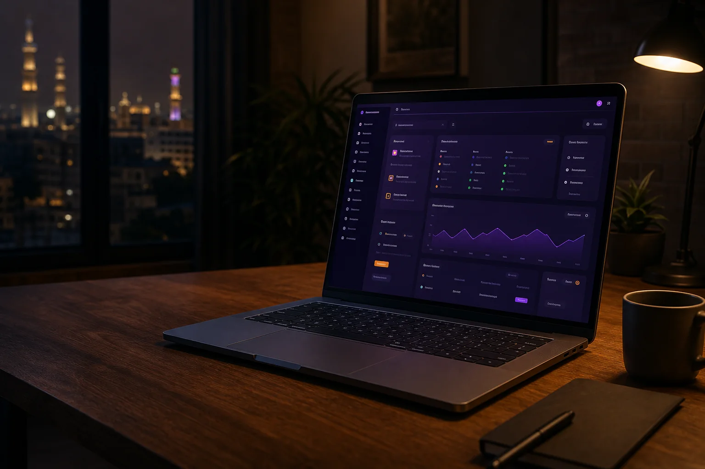
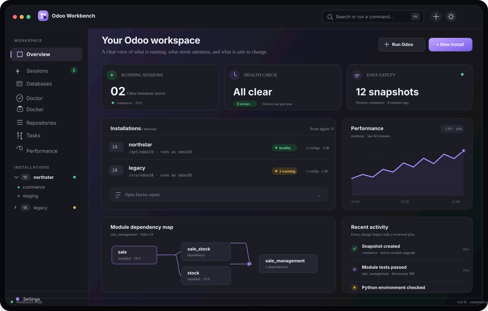
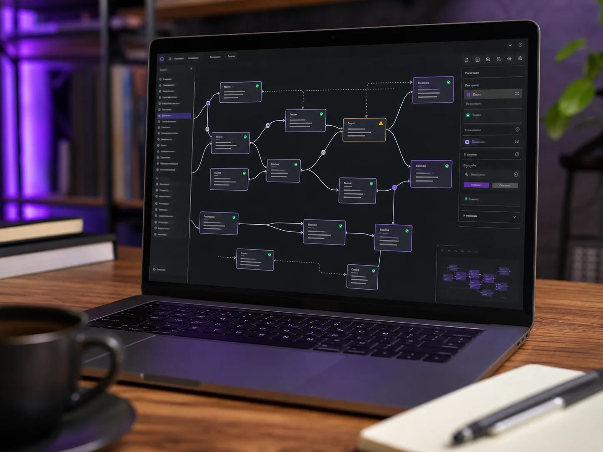
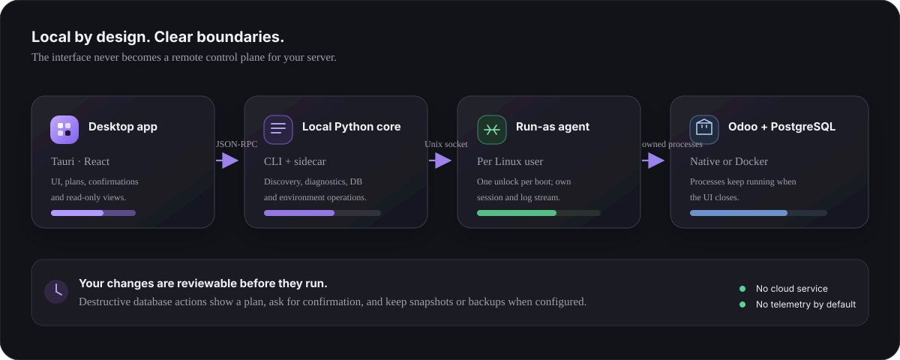

01
Find the whole picture.
Discover source trees, virtualenvs, configs, databases, filestores, active processes and systemd units—without touching them.
A clear, calm workspace for the installations, databases, modules and tools around your Odoo projects. Built to keep the real work on your own machine.
odp CLI
✓ Odoo 15–20
✓ Ubuntu 24.04 / 26.04
Independent community derivative of Odoo Dev Panel · Apache-2.0 · not an official Odoo product

Stop stitching together a different terminal command for every Odoo install. Workbench brings your local development environment into focus—and puts the next safe action within reach.

Discover source trees, virtualenvs, configs, databases, filestores, active processes and systemd units—without touching them.
Start an instance with its own Linux user, database, modules and dev flags. Watch logs and stop it deliberately; closing Workbench won’t stop Odoo.
Back up, restore, clone with filestore, neutralize, snapshot and revert. Review the plan before every operation that changes data.
Trace dependencies, required-by links, missing and shadowed addons, version drift and per-database install state. Run tests in a throwaway database.
Provision Odoo 15–20, manage Docker + PostgreSQL, check Python requirements and see repository branches, changes and sync state in one place.
Build repeatable task flows, attach debugpy and VS Code, inspect PostgreSQL sessions and locks, and find the pressure point behind a slow page.
The app and CLI share one core. Build from the desktop or automate the same workflows with odp.

Odoo projects don’t live in a single checkout. Workbench maps what is installed, what depends on what, where addon paths overlap and whether the database still matches the code.
Workbench is a desktop tool, not a cloud console. The UI talks to a local Python core; a per-user agent starts Odoo as its own Linux user. Review the architecture and security notes before using it on a shared machine.

Commands and data changes are visible before they run.
Odoo runs as its own Linux user through a local agent.
Snapshots and backups keep a way back when configured.
Scanning the machine does not modify its installations.
Designed for Ubuntu 24.04 or 26.04 on x86_64. The app works with the installations already on your workstation; you don’t need to migrate to a new layout first.
sudo apt install ./odoo-workbench_<version>_amd64.deb./dev.sh # desktop app · hot reloadThe upstream APT signing key is intentionally not reused. This derivative’s own release signing and update channel must be configured by its maintainers.
Not sure how Workbench fits your setup? Request a complimentary 20-minute consultation. Bring your Ubuntu and Odoo versions plus one workflow you’d like to improve—we’ll help you find a practical first step.
Never share credentials, customer data, database dumps or private configuration files.Odoo Workbench is an independent derivative of Odoo Dev Panel by SparkDrago05, licensed under Apache-2.0. We preserve upstream attribution and do not imply Odoo S.A. affiliation.